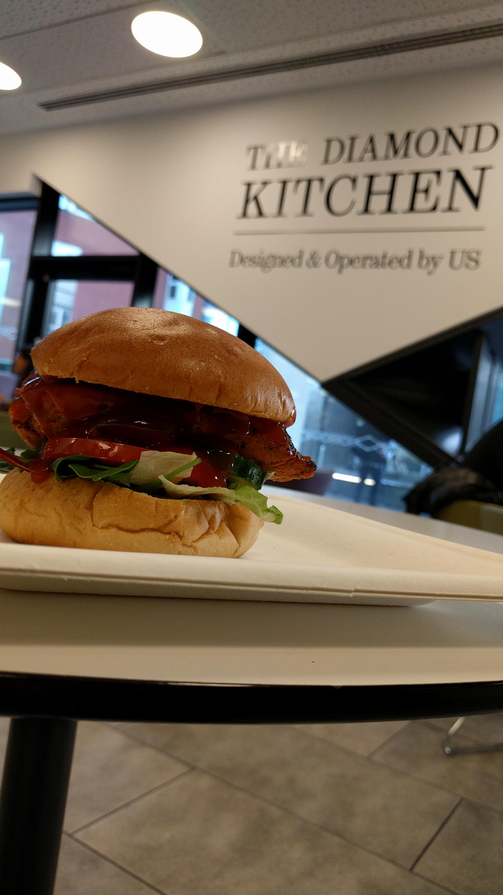
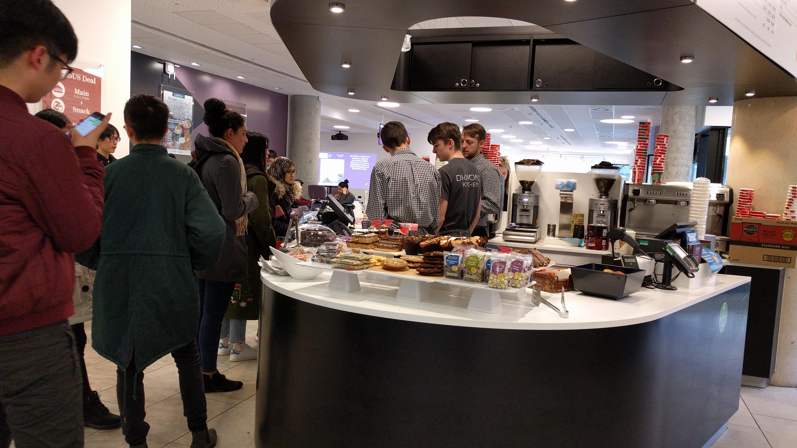
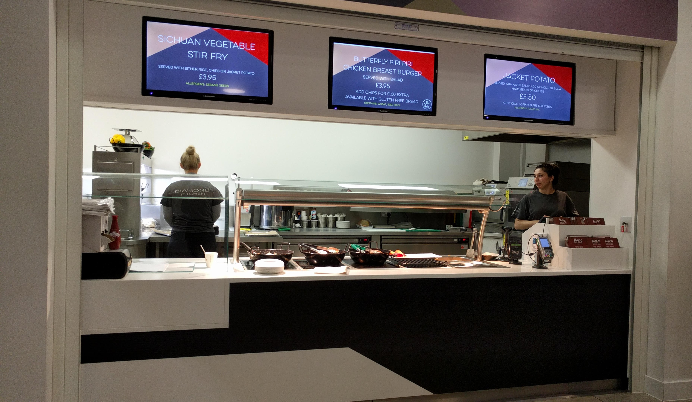

The Diamond Café/Kitchen
The Diamond Café is conveniently located to allow you to grab food on the go. Located just to the left of the main reception on the ground floor, there are a number of spaces to sit and eat with a few friends.
There's a small island situated at the centre of the Café, where you can order from a range of hot drinks, such as a hot chocolate or a mocha. You can also order smoothies and choose from a range of snacks such as biscuits, cakes and bars. TAt Christmas time, you can also find a festive drinks range!
The Diamond Kitchen is located opposite the Island, where you can order from a small range of freshly prepared meals, every day of the week. There is a wide variety in the meals offered each day, from Jacket Potatoes to Sri Lankan Chicken Curry. We’d personally recommend the Diamond Wrap, which will always go down a treat, or the Butterfly Chicken Breast Burger; pictured to the right (or at the top of the page on mobile devices)
If you don’t fancy any of the meals on offer, there’s also a very large variety of sandwiches, drinks and snacks on offer too. All in typical meal-deal fashion. There are classic sandwiches like a BLT or Chicken Sandwich, and there's some original combinations too. We'd highly recommend taking a few moments to see what's on offer.